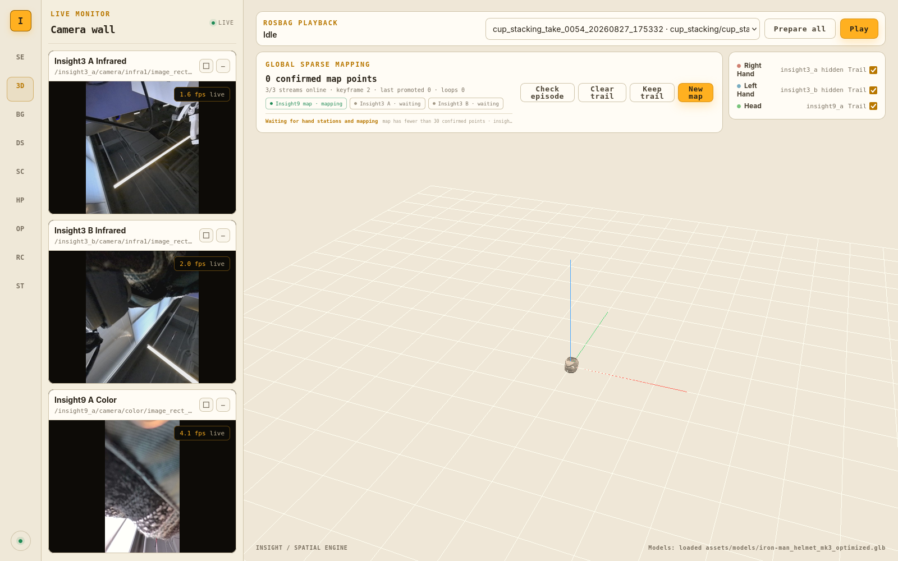
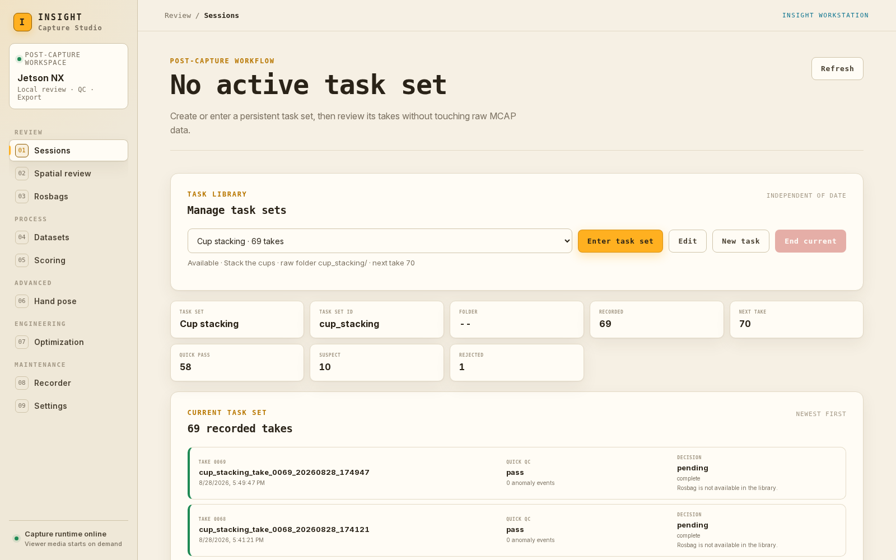
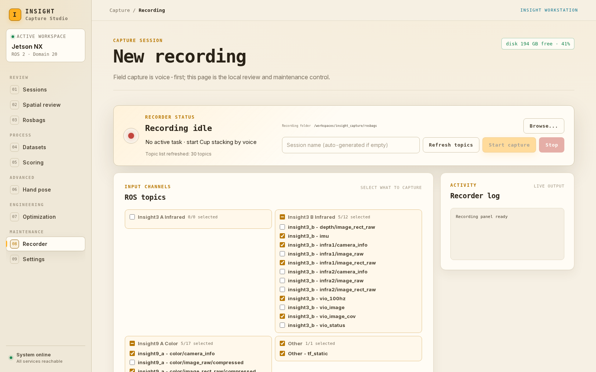
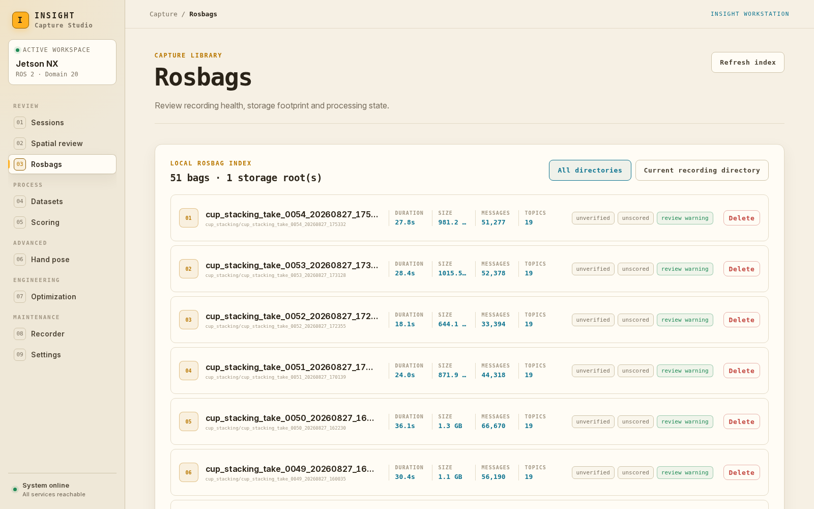
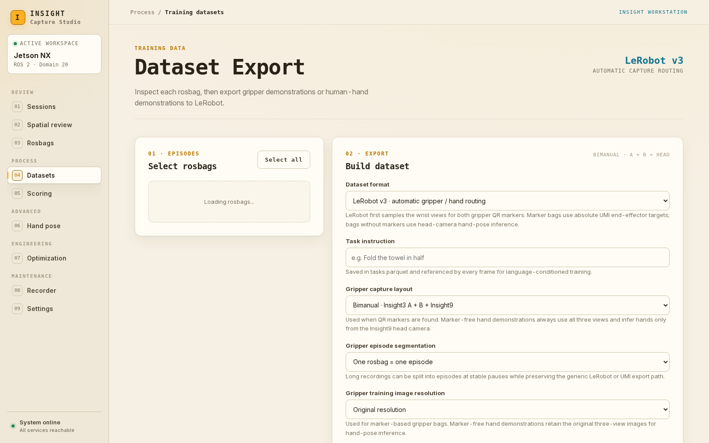
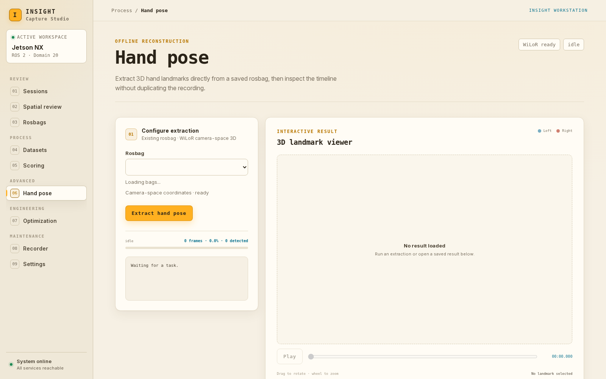
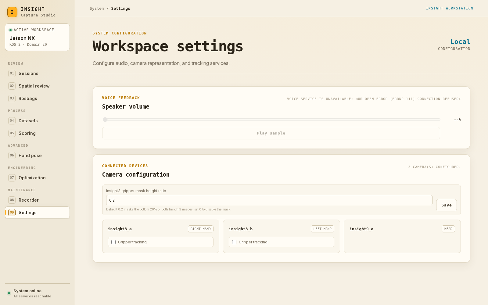

网页版 · Jetson 本地使用
在 Jetson 的显示器、键盘和鼠标上完成预览、采集、回放与数据导出。
重要：Insight 相机上电顺序与 USB 断连恢复
设备启动时：先连接三路相机的 USB 线，等待 Jetson 开机完成，再插上电池上的 12V 相机供电线。
由于 Insight 产品限制，USB 线松动或掉落后，仅重新插上 USB 线不会恢复相机发现。必须先接好 USB 线，再将电池上的 12V 相机供电插头拔下并重新插入，相机才会重新被发现。
cd /home/nvidia/insight-capture-dashboard ./scripts/run_dashboard.sh --jetson
| 当前设备角色 | 用途 |
|---|---|
| Insight3 A / Right hand | 右手夹爪相机 |
| Insight3 B / Left hand | 左手夹爪相机 |
| Insight9 / Head | 头部相机与公共地图参考 |
连接相机和录制盘，确认实际保存位置与剩余空间。已有服务时不要反复运行启动脚本，它可能重启后端。录制结束后先等待停止与保存完成，再关闭前端。
只关闭网页窗口不会停止后端录制。收工时先点击 Stop 并确认保存，再结束任务、关闭浏览器；确认没有写入后才卸载录制盘或关机。
通过左侧导航切换功能。在空间页，侧栏缩写对应同一组入口，鼠标悬停可查看名称。
| 页面 / 空间页缩写 | 用途与路径 |
|---|---|
| Sessions / SE | 创建、编辑和进入任务，查看 take 与快速质检。/ · 第 4 页 |
| Spatial review / 3D | 三路视频、空间轨迹、建图、采集检查及回放。/3d · 第 3、6、10 页 |
| Rosbags / BG | 查看录制完整性、大小、缓存状态与删除。/bags · 第 6 页 |
| Datasets / DS | LeRobot / UMI 数据集导出。/umi-dataset · 第 7 页 |
| Scoring / SC | VIO 轨迹质量评分。/scoring · 第 8 页 |
| Hand pose / HP | 离线人手关键点重建与结果回放。/handpose · 第 8 页 |
| Optimization / OP | VIO 与 COLMAP 轨迹对齐。/optimization · 第 8 页 |
| Recorder / RC | 存储目录、话题选择、录制启停和日志。/recording · 第 5 页 |
| Settings / ST | 音量、夹爪跟踪和定位遮罩。/settings · 第 9 页 |
进入任务 → 确认三路在线 → 统一坐标 → 录制 → 停止保存 → 质检/回放 → 导出。
每条动作采集后检查是否完整，结束当天采集后再执行批量回放准备、导出或优化，避免重型任务影响实时采集。
核对日期：2026-09-20。内容来自当前工作区前端与启动脚本，7 张插图均为本次在 Jetson 上新截取的实际页面，没有复用旧截图。已有任务和录制名称是当时页面内容；本次未新建录制、删除数据或运行导出。
http://127.0.0.1:8765/3d · 左栏三路视频，右侧空间视图，上方回放和建图控制。

| 按钮 | 含义与使用时机 |
|---|---|
| Keep trail | 保留并持续累积当前显示轨迹，适合观察较长动作。 |
| Clear trail | 清空轨迹历史，不重新建立地图；会影响共享后端的轨迹显示。 |
| New map | 换场地或明确需要重新建图时使用。停止录制和回放，确认重置，再缓慢观察场景、等待重新定位。 |
左侧 Sessions · http://127.0.0.1:8765/

| 项目 | 注意事项 |
|---|---|
| Task ID / Edit | ID 使用小写字母、数字、下划线或连字符，创建后固定；显示名与任务描述通过 Edit 修改。 |
| pass / suspect / pending | 快速检查通过 / 需要复核 / 尚无结论。通过不等于动作符合任务要求，仍需人工看回放。 |
| rejected | 已作废。当前任务页展示结果，没有逐条批量审核或作废按钮；不要用录制库 Delete 代替标记作废。 |
左侧 Recorder / Recording · http://127.0.0.1:8765/recording

使用一个页面负责录制启停，关闭重复的视频预览标签页。切换网页不等于停止录制；判断是否录制以 Recorder 状态为准。离线导出、优化和批量回放准备安排在停止采集后。
左侧 Rosbags · http://127.0.0.1:8765/bags

| 录制库控件 / 标签 | 含义 |
|---|---|
| Refresh index | 重新读取列表；All directories 查看所有已登记目录，Current recording directory 只看当前录制目录。 |
| complete / incomplete / unverified | 完整性检查通过 / 未通过 / 尚未验证；与回放是否已准备是两项不同检查。 |
| scored / unscored | 是否已有轨迹评分；评分入口是 Scoring。 |
| ready / pending | 回放媒体已准备 / 尚待准备。首次回放可能需要转换并显示进度。 |
| Delete | 确认后永久删除该录制目录。备份并核对路径后再执行，不能用来代替“作废”。 |
进入 Spatial review → 上方选录制 → Play → 等待准备完成。准备时查看百分比与阶段；Prepare all 可在录制空闲时排队补齐回放缓存。回放过程中查看视频与随时间展开的轨迹；Stop 停止，Go live 返回实时。
左侧 Datasets · http://127.0.0.1:8765/umi-dataset

| 字段 | 怎么选 |
|---|---|
| Select rosbags | 勾选录制；Select all 全选当前候选列表。先排除动作错误、缺流或需要复核的数据。 |
| Dataset format | 通常选 LeRobot v3；需要旧版夹爪 Zarr 数据时选 Legacy UMI。 |
| Task instruction | LeRobot 必填，填写本批数据的动作指令，例如 “Fold the towel in half”。不同任务分开导出。 |
| Gripper capture layout | Single arm A = 右手；Single arm B = 左手；Bimanual = 双手 + 头部。按实际采集配置选择。 |
| Episode segmentation | 通常一包一条 episode；长录制可选 Auto-split，按稳定停顿自动拆分夹爪片段。 |
| Image resolution | Original 保留原尺寸；224 或 384 使用固定下部区域裁剪。此设置用于夹爪路线，按训练要求选择。 |
点 Inspect and build LeRobot dataset（旧格式为 Build UMI outputs），等待检测、推理、编码及打包。LeRobot 自动检查夹爪标记：有标记走夹爪路线，无标记走头部相机的人手姿态推理路线，后者保留三视角原图。
完成后逐项核对成功数、episode 数、帧数和输出路径。常见目录为 outputs/lerobot_datasets/ 或 outputs/umi_datasets/，以页面结果为准；显示 100% 仍可能有部分失败。
fail_ 前缀，随后不再出现在正常候选列表。先读取失败原因和实际路径，再决定处理或重试。这些是录制后的可选工具。先完成现场采集，再安排较重的处理任务。
/scoring评分衡量 VIO 协方差相关质量，不能代替回放中的动作正确性、全局定位或图像完整性检查。
/handpose
outputs/handpose。/optimization选择 Rosbag → Camera → 实际存在的 Image stream（color compressed / color raw / infra 1 / infra 2）→ 可填写 Run name → Run optimization。查看进度与日志，必要时 Stop；完成后比较 VIO 与 COLMAP 对齐轨迹。已有任务从 Saved run → Load trajectory 载入，View log 查看日志。
左侧 Settings · http://127.0.0.1:8765/settings

| 设置 | 操作 |
|---|---|
| Speaker volume | 拖动 0–100 音量条，Play sample 试听。不可用时先检查语音服务与扬声器。 |
| Gripper tracking | 按相机启停夹爪跟踪；若有 Hand landmark overlay，可控制手部关键点叠加。 |
| Gripper mask height ratio | 屏蔽 Insight3 图像底部区域参与定位的比例；0.2 表示底部 20%，0 表示不屏蔽。修改后点 Save。 |
| Restart backend | 仅在页面提示需要重启时使用；先停止录制和回放，保存工作，再重启并等待重新连接。 |
| 遇到的现象 | 先做什么 |
|---|---|
| 网页打不开 / 连接中断 | 在 Jetson 本机确认后端已启动，使用 127.0.0.1:8765；不要使用 SSH 隧道。 |
| stale、黑屏或一直协商 | USB 松脱后：先接好 USB，再拔下并重插电池上的 12V 相机供电插头；仅重插 USB 无效。随后确认三路画面持续更新。 |
| 有视频，没有模型或轨迹 | 检查建图、手部定位和 Trail 勾选状态；先等待输入与定位就绪，不盲目反复 New map。 |
| 预览卡顿 / FPS 低 | 使用启动脚本配套的 Firefox，关闭重复视频页面及重型处理任务。预览流畅度与录制丢帧分开检查。 |
| 找不到录制 / 导出失败 | 刷新并切到 All directories，检查实际盘和路径；查看失败原因、fail_ 文件名与结果路径。 |
确认 A、B、Insight9 三路视频持续更新，镜头无遮挡。选光照稳定、纹理丰富的桌面和周围背景，避免纯白墙、反光面和大面积运动物体。相机、夹爪及标记块的固定安装和外参应已完成配置；拆装后先重新标定，不能靠拖动 3D 视图修正。
打开网页 Spatial review。新场地需要新会话时，先停录制和回放，再点 New map 并确认；已有可用地图无需重置。缓慢移动、转动头部相机，从不同角度观察同一片工作区，适当平移产生视差，等待关键帧与地图点增长。
分别让 A、B 的视野覆盖 Insight9 已看过的静态区域，缓慢调整位置和角度，避免模糊与遮挡；保持几帧稳定，等待系统匹配自然特征并确认定位。不要只把三个相机摆在一起却让它们朝向不同区域。
带标记块的夹爪：当前 Jetson 配置也支持头部相机观察夹爪立方体辅助定位。右手 A 的标记为 8/9/10/11，左手 B 为 2/3/4/5；让头部彩色画面清楚看到每个立方体的至少两个不同平面（如顶面和侧面）。只看到一个正面标记不会用于实际坐标修正，头部全局位姿也必须先有效。
| 必须核对 | 通过标准 |
|---|---|
| 数据在线 | 三路视频都实时更新，VIO 持续输入；没有 stale。 |
| 全局定位 | Insight9 建图在线，A/B 不再是 waiting / unlocalized；三角色在同一空间视图显示且随实体移动。 |
| 物理一致性 | 左右不互换，模型的相对位置与朝向符合现场；缓慢移动一只手，另一只不随之漂移，回到原位置时轨迹合理。 |
| 采集检查 | 双手相机回到固定工位、头部重看已建图区域，点 Check episode；处理未通过原因后再采集。 |
公共世界系为 insight9_map。系统为每只手估计“局部 VIO → 公共地图”的变换，再结合相机安装外参输出全局位姿：公共地图 → 手部局部 VIO → 手部相机中心。标记辅助路径为：公共地图 → 头部相机 → 夹爪标记块 → 手部相机中心。TCP/指尖还需独立的相机中心到 TCP 外参，不能与相机中心混用。
短暂离开地图区域时可能进入 vio_only，表示用上次校正继续跟踪，需重新观察已建图区域校正漂移。New map 会清除当前对齐并开始新会话，各次重建不保证同一原点。旋转/复位观察视角只改变显示，不改变三相机的标定关系。